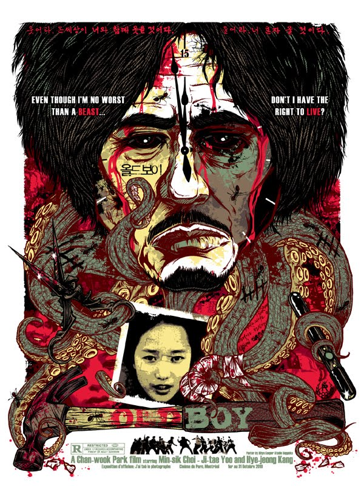
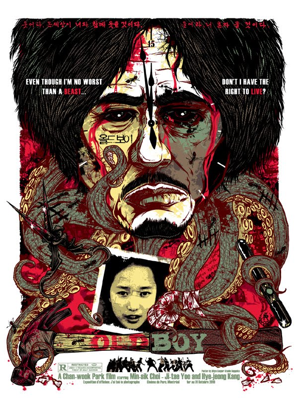
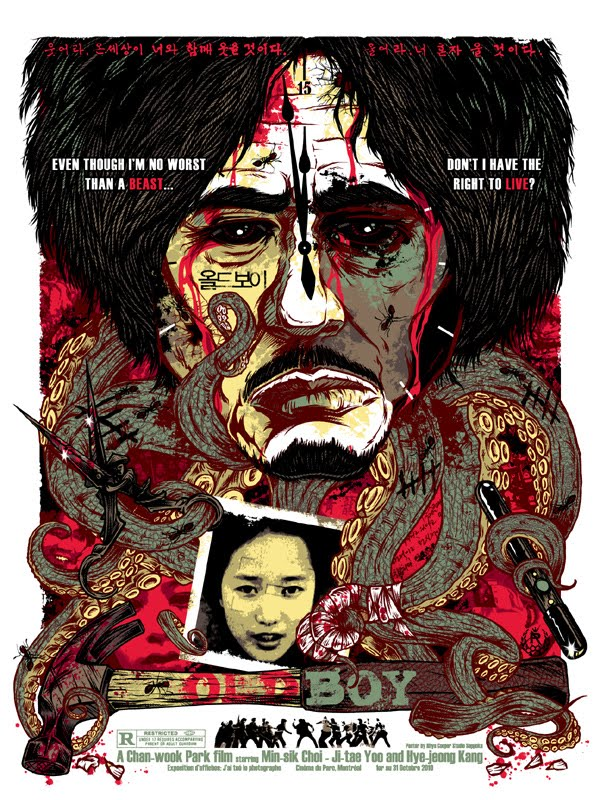

Let's begin with two of my favorite horror movies of all time:
28 days Later is simply the best zombie flick of all time. That's all. There is no need for a more elaborate synopsis. Now I realize that may not be very "objective" and we can have a long, drawn out conversation as to why you think some other zombie movie is superior... Though I'll just be playing 28 Days Later in my head the entire time, so why bother?
In American Psycho we delve into the mind of eccentric businessman and part-time murderer, Patrick Bateman! An intense thriller mixed with a fair bit of dark humor and the performance of lifetime from Christian Bale. A classic.
Next we have my favorite show along with a Korean movie I once watched when I was bored. Exciting!
Twin Peaks is certainly not for everyone, but I adore this show. Sure, it feels incredibly dated by todays standards. Sure, the writing suffered after the initial mysterious murder plot was wrapped up. Sure, it was basically an incoherent mess towards the end, but nevertheless I still love it for it's surreal plot and quirky characters. Now - over 2 decades later - I can finally look forward to a third season even though it'll probably be terrible.
Oldboy is truly something special. I picked it out at random on Netflix one day and it has since become one of my favorite movies. A truly twisted and brilliant plot with a final act that I couldn't have anticipated in my wildest dreams. Honestly it's not for the faint of heart and certainly not for those who would be appalled when presented with some rather taboo material, but I can guarantee you won't see too many movies like this one. There's also a Western remake, but I can't really comment on that version as I haven't seen it.

If you'd like to know a little more about me then you can proceed to page two by clicking
here!


 
